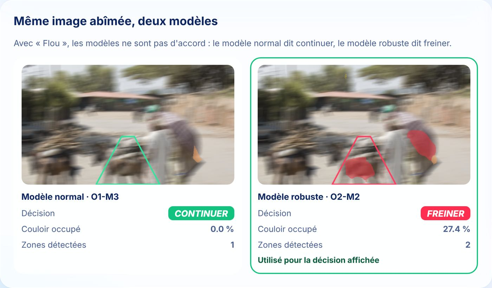
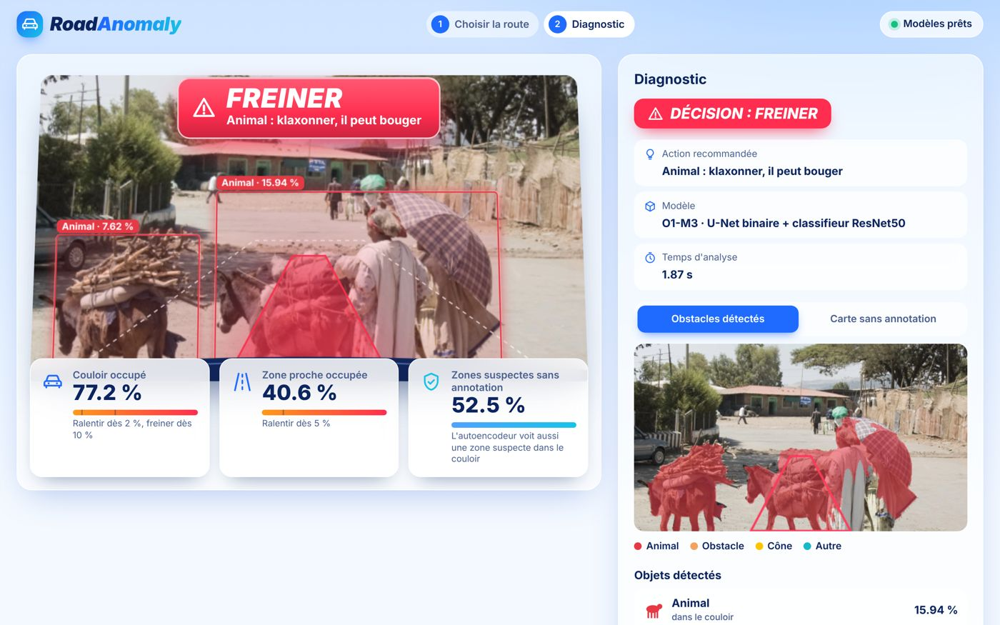
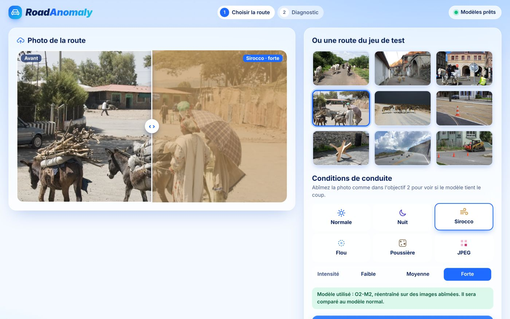

RoadAnomaly
Un animal, un rocher, un carton tombé d'un camion : le modèle repère ce qui n'a rien à faire sur la route et décide s'il faut freiner, ralentir ou continuer. Avec seulement 60 images annotées.
An animal, a rock, a box fallen off a truck: the model spots what doesn't belong on the road and decides whether to brake, slow down or keep going. With only 60 labeled images.
U-Net puis classifieur ResNet50, U-Net robuste réentraîné sur des images abîmées (nuit, sirocco, flou, poussière, compression) et autoencodeur pour détecter l'inconnu. Démo web Flask pour comparer les modèles en direct.
U-Net followed by a ResNet50 classifier, a robust U-Net retrained on degraded images (night, sirocco, blur, dust, compression) and an autoencoder to detect the unknown. Flask web demo to compare the models live.


